Hi, I'm Olga Geletina or simply O.
This is my How to Make (almost) Anything class page.
Week 1
To-do:
Cut something on a vinyl cutter
Design, make, and document a parametric press-fit construction kit
Create a website
Claude Shannon: "the father of information theory"
Theory of Self-Reproducing Automata: book by John von Neumann demonstrating the logical requierement for machine self-replication. His machine, the Universal Constructor, was designed in the 1940's without the use of a computer
circumbendibus: a roundabout way
Ohm's Law: I = V/R current through a conductor between two points is directly proportional to the voltage across the two points
Murray's principle: formula of relating the daughter branches to the radii of the parent branch of a lumen-based system – radius of the parent branch cubed equals to the sum of all of the daughter radii cubed. The same principle has been applied to engineering in the design of minimum mass vascular networks carrying liquid healing agent to areas of skin damage
Fick's laws of diffusion: describes diffusion, the first law was based on the assumption of a steady state in which particles move from areas of high concentrations to low concentration areas thereby establishing an equilibrium
Fourier's law: the law of heat conduction which states heat flows spontaneously from the hotter body to a cooler body converging toward a thermal equilibrium
chirality: property of asymmetry that, unlike, a mirror image cannot be superpose one object onto another
vector: displacement of a starting point, has both magnitude and direction
tensor: analogous but more general than a vector, represents a distortion in the form of a linear relation - e.g. dot product, cross product, linear maps
voxel: unit of value in three-dimensional space
halftone: technique that simulates imagery through the use of dots varying either in size or in spacing
interpolation: method of construction new data points within the range of a known set of data points
WHY? WHY NOT?
black vinyl on wall
Dodecahedron
With the help of Nathan's awesome tutorial, I made a parametric press-fit dodecahedron. At the base of the structure is a regular pentagon (Dih5symmetry, order 10), held together with circular parts. The shape is bound by a rectangular joints that can be resized dynamically. This was my first time using Rhino's Grasshopper plug-in. Albeit successful, the experience was largely frustrating – my efforts culminated in a Rhino and Grasshopper files. Finally, the piece was laser cut of our cardboard – it's aesthetic was designed to stimulate geometry I am considering for the light portion of my final project.
- 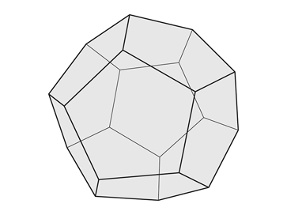
- 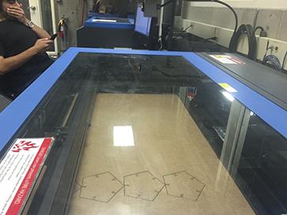

- 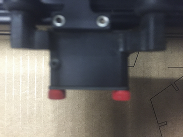


Website
Using templated websites in the past has been frustrating – they never look right and editing the beehive of code these come with is never fun. For the sake of my sanity, I decided to flex my front-end prowess and create a minimal page from scratch – built easy to edit.
Inspired by the class website I worked under the premise of less is more – no fancy effects or Javascript to start. The challenge was to make the page with an idiosyncratic “notebook” feel. One of the things I hoped to convey is how I take notes - whenever I come across an unfamiliar term, name, or principle I record it to look up at a later point. Thus, the first section of each week is devoted to this initiative – most of the highlighted terms are related to the course and some are an indication of other interests.
The other important feature of the website it it’s aesthetic – a clean look with a touch of uniqueness. As an individual sensitive to typography, font selection is not a trivial matter. After going through a couple of permutations, I settled on a paring of Arvo and Cutive Mono (both are available for free on Google Fonts). While a fan of all things white, I thought to add a gradient in the background inspired by color palette of a sunset. Eventually, I hope to use this page as a sandbox for remodeling, geletina.com - my current website.
Week 2
To-do:
Make an in-circuit programmer
Program abovementioned programmer
haimish: homey, cozy, unpretentious
electrical resistance: measures the level of difficulty to pass an electrical current through a conductor, the inverse quantity is electrical conductance which measures the level of ease
pull-up/pull-down resistors: used to prevent floating by ensuring that the MCU input pin is either in high (pulled to VCC) or low state (pulled to Ground). Pull-up resistor is more common of the two - it is frequently connected to high voltage (often allocated to VCC) and pull-down is often connected to ground
capacitor: stores electric energy in an electric field between two conductive plates
diode: an electrical device that allows current to move through it in one direction with greater ease
clipper: prevents the output of a circuit from reaching a certain voltage without impacting the remaining waveform
differential signal mode: pair of traces between receiver and driver - one carries a negative signal while the other a positive one. These signals are equal and opposite, thus there is no return signal from ground - what travels along one trace comes back the other. The USB operates under this construct
Serial Peripheral Interface (SPI): synchronously sends data between master (e.g. microcontroller) and slave (e.g. sensor, SD card) compotents by separating the clock and data lines
resonator: creates an external clock signal for the microcontroller
short: happen when current travels down an unintended path between two nodes intended to be at different voltages
open: the opposite of a short, i.e. lack of current between two nodes
Alternating Current (AC):current in which the flow of electrical charge periodically reverses direction
Direct Current (DC): the opposite of AC, i.e. the flow of electrical charge is in one direction only
trigger: a circuit that controls another circuit, converts inputs into outputs. The output remains constant until the input is sufficiently altered
Gersh
Since this is was my first foray into PCB production I thought to keep it simple and use the boilerplate template supplied in the week's lecture. I was rather pleased with the outcome – meet Gersh - an in-circuit programmer.

- 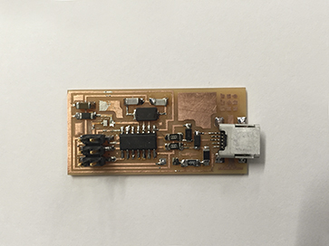

The final step in the making process is frequently the sweetest one. Here is a screen capture of Gersh being recognized by the computer.
Week 3
To-do:
Design and 3D print an object that could not be made subtractively
3D scan an object
Make a scanner
graphine: allotrope of carbon in the form of two dimensional, honey-comb lattice on atomic scale. It is about 100 times stronger than steel, conducts electricity and is nearly transparent
CIE Color Space: characterizes color by a luminesce parameter and two color coordinates. The system offers a more effective way of color measurement than euclidean based approaches
hygrophilic: preferring moist habitats
Catalan surface: spiral-looking surface all of whose planes are parallel to a fixed plane
geodesic: applying the notion of a straight line to curved spaces, used to mean the shortest distance between two nodes on the Earth's surface
Polylactic acid (PLA): biodegradable polyester typically made from corn starch, tapioca roots, or sugarcane. PLA has one of the highest bioplastic consumption volumes in the world
Acrylonitrile butadiene styrene (ABS): thermoplastic polymer, is amorphous and doesn't have a true melting point, can be carninogenic at higher temperatures (~400 °C)
Stereolithography: uses a laser beam to 3D print layer by layer from a liquid polymer that hardens on contact
Continuous Liquid Interface Production (CLIP):photochemical process involving uncured resin, exposure to oxygen, and a light source - it is said to be very fast
I returned to the same shape for this week's assigment, taking it a step further I designed (using Rhino) a dodecahedron illustrative of the fact that a cube can be constructed from its vertices (Steinhaus 1999). I used the Formalabs and 3DWOX to make models at different scales. The first couple of attempts were trying – not enough support, too little resin, excessive support, etc.

- 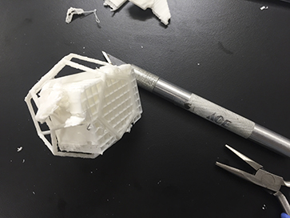

Scan
Scanning an object posed its own set of challenges. Sense didn't seem to respond particularly well to my attempts of scanning a bust or small objects (about the size of a handful or less). However it did scan a bottle of Goop soap nicely (inserting an extra "o" for good measure). My dodecahedron didn't pass the Sense size threshold, so I tried to capture the shape using 123D Catch which did not turn out particularly well either.
- 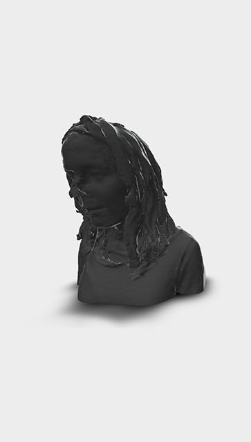
- 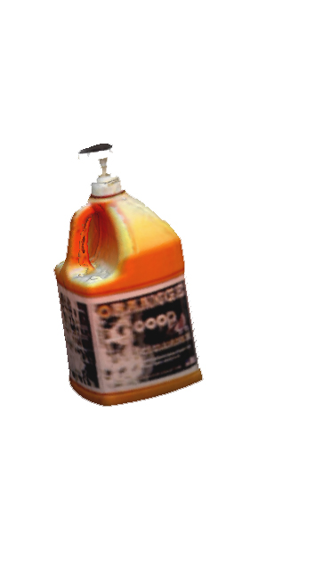
- 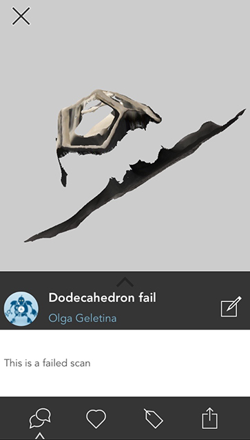
Scan some more
This 3D heat scan was created in a collaboration with James Penn, a wizard of sorts. The idea behind it was to draw on the visuals heat produces as well as to scan a feature that extends beyond what is visible to the naked eye.
Our set-up included a stepper motor, two breadboards, an arduino, mystery electrical components, and a couple of glasses of whiskey.
- 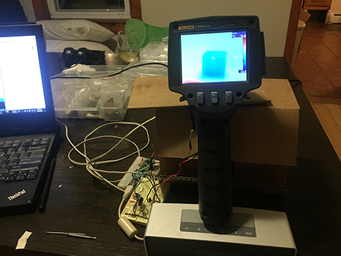


Week 4
To-do:
Re-draw and echo the hello world board
Add (at least) a button and LED (with current-limiting resistor)
atavism: evolutionary throwback
cathode: negatively charged electrode by which electrons enter a device
anode: the opposite of a cathode, i.e.positively charged electrode by which electrons leave a device
Moore's Law: an observation made in 1965 by Gordon Moore, co-founder of Intel, predicting that the number of transistors in a dense intergrated circuit will double every two years. While Moore's law held true for several decades, the trend has slowed down cosiderably as physical limits to transistor scaling has been reached
Kirchhoff's circuit laws: a set of rules first described in 1845 by Gustav Kirchhoff
Kirchhoff's current law (KCL): indicates that at any node in an electrical circuit, the sum of currents flowing into the circuit and the sum of currents flowing out of the circuit must equal
Kirchhoff's voltage law (KVL): the sum of electrical potential differences (voltage) around any closed network is zero
medial axis: also know as cut locus, is the set of all points having more than one closest point to the object's boundary
Hello... EAGLE?
This week's assignment came with a set of unexpected technical challenges. From Eagle's lack of user-friendliness (the best of which, in my opinion, is the lack of partial search) to the Roland mill refusing to cut the outer border of my board (table saw came in handy) - pit falls were around every corner, until I got to soldering. Words cannot convey the unbridled joy I felt when testing my board - all of the traces seemed to check out.

The board above has two additional LED's - here are my Eagle schematic and board files.
Morti
In an attempt to get better acquainted with circuit board construction and to have some fun, I designed a custom circuit board in the shape of a skull.
Week 5
To-do:
Make something big
Galvanometer systems: based on moving mirror technology, similar to what is used to create laser light shows
Garolite: fiberglass-epoxy laminate – high strength and stable under temperature fluctuations - a cheaper alternative to carbon fiber
encapsulation: OOP concept bringing together data and functions that manipulate said data - led to advancement in data hiding
runout: inaccuracy due to misalignment between a tool and the main axis – will result in a larger hole than the diameter of the drill
LED Light Pipe: optical fiber or a solid transparent plastic rod for transmitting light from an LED mounted mounted on a PCB to the user interface
minimal surface: a surface that locally minimizes its area and has the mean curvature of 0
Seifert surface: a surface whose boundary is a link of a knot - e.g. Mobius strip
isosurface: three-dimensional analog of a countour line - a level set of a continuous function whose whose domain is a 3D space
Marching cubes: computer-graphics algorithm published in 1987 for extracting polygonal mesh from isosurface voxels
Big as a collection of many
I chose to interpert this week's assignment a bit differently – rather than making one big thing, I thought to make a series of smaller things that together amalgamate into a bigger thing.
Wood
In an effort to make home feel more like home, I created two storage units from the wood scaps found at the GSD.
- 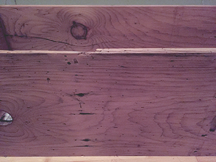
- 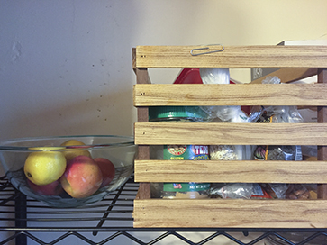
- 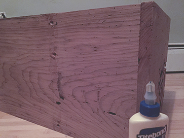
Metal
Working with metal has been something I've always wanted to do – sheet metal in particular has a very alluring craft property. Yet, I never had access to a metal shop until now.
This week's assignment presented me with the perfect opportunity to try something new. I sought to create an abstract form that would serve as a scuptural light fixture. The aesthetics of a capped pyramid were paired with openings from which light would be able to escape.While I was content with my design in rhino, the final product was disappointing.
- 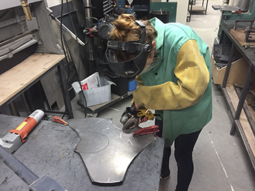


On the brighter side, I got to use a grinder and nibbler; rolling and hammering metal into shape was a very satisfying, empowering, and addicting aspect of the task.

Week 6
To-do:
Read a microcontroller data sheet
Program board from previous week to do something
discritization: transfer of a continous entity into discrete counterparts
Schwarz–Christoffel mapping: conformal transformation of the upper half-plane onto the interior of a polygon
PSoC (Programmable System-on-Chip): family of microcontroller intergraded circuits – good for analog requirements
GPIO (General-purpose input/output): a generic pin whose behavior is controllable by user at run time
PWM (Pulse-width modulation): encodes a message into a pulsating signal, its main use is to control the power supplied to to electrical devices
Duty cycle: percentage of a period in which a signal is active
Auxetics: structures or materials that have a negative Poisson's ratio, thus becoming thicker perpendicular to the force applied
Catmull–Clark algorithm: a technique used primarily in computer graphics to create a amooth surface by subdivision
Programming
I created two programs this week – one to turn on an LED when pressing a button and the other to echo a phrase typed out into the console. I also attempted to mill Morti (the custom circuit board), alas to no avail.
- 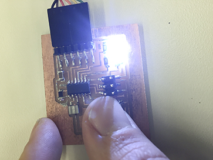


Week 7
To-do:
Design a 3D mold, machine it, and cast parts from it
Positive to Positive Mold to Negative Mold to Positive to...
Having had cast a relief sculpture previously, I thought myself an expert. The hubris was unwarranted, in fact I think it would have been wiser to espouse the Socratic paradox ("I know one thing: that I know nothing").
However for willful person, there is no going back - I set to make a light fixture - a hallow shape to house a light scocket with a crevice for the wire. Working in Rhino, I first designed the positive then with consult from the gurus I worked on making a positive three piece mold.
The process was a laborious one. Yet by Sunday morning I thought I had it down flat. It was time to mill. While my shape was relatively small it was still larger than any of the readily available end mills. So on Tuesday morning I negotiated to borrow a longer bit from the Harvard Design School.
- 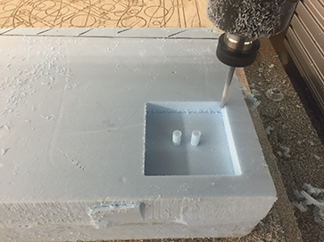
- 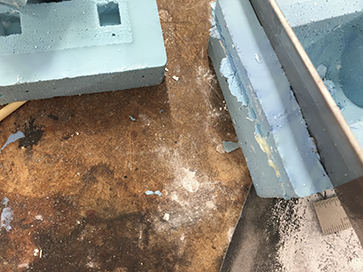

The trials and tribulations did not end there. Shortly after the process was done I realized I made a few error in mold, which either the original design or the milling instructions could have compensated for. I resolved the errors retroactively using tape, an exacto knife, and a sprinkling of Hydrostone.
It was then time for OOMOO, whether due to my poor mixing/pouring skills or the compromised A/B parts the substance was foamy – a texture my final piece inherited.
- 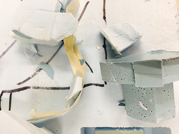

- 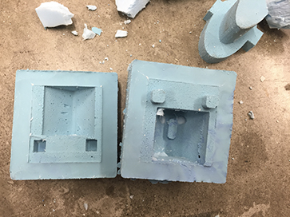
All's well that ends well - after a semi-disasterous process of "free-ing" my OOMOO negative mold from its positive master and modifying the negative mold with clay and a blade, I was ready to pour.

- 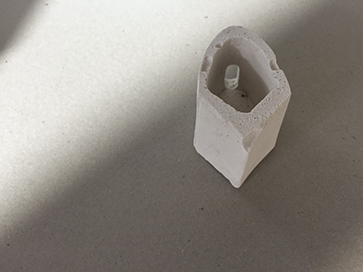
- 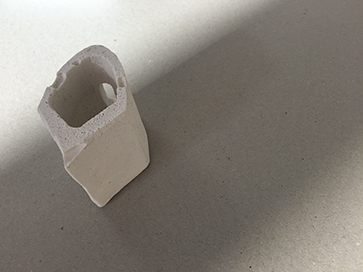
While with its own set of flaws, I was quite happy with the fruits of my labor.
Week 8
To-do:
Measure something: add a sensor to a microcontroller board that you have designed and read it
Beats and such
For this week I chose to do an analog microphone board, with an additional LED. Designed in EAGLE, my schematic and board took substantially less time than before. Similarly, the milling and soldering was smooth sailing. Until...
I realized (only after my board was completely finished) that one of the traces was improperly cut. To mitigate this issue I turned to my trusty friend - the X-Acto Knife. Yet despite my best intentions I cut the wrong trace. Dismayed at first, I hacked my way through it. Since the trace was under the microchip, neither a jumper wire nor 0 ohm resistor would do so I improvised by adding a piece of copper.
Using the code posted on the website I was able to successfully program the board.
My next steps are to attain a better understanding of python script and the information being sent through serial. From there I would like to configure the LED to light up once a certain threshhold of sound is reached. All efforts moving toward developing a beat recognition algorithm for my final project.
Week 9
To-do:
Read the material safety data sheet (MSDS) and technical data sheet (TDS) for the resins that you're using
Design and fabricate a 3D mold (~ft2) and produce a fiber composite part in it
Composites
Inspired by the work of Amir Karimpour, I decided to experiement with Maya to create an interesting form for my composite.
Overall, this week was lacking in failure. Everything came together nicely - from the machining on a Shopbot, which was a breeze, down to the finished fibers. Since the purpose of the work was mostly aesthetic, I opted for linen in favor of burlap, which I dry fitted by making a few incisions lining the crevices beforehand. The form came out beautifully with a resolution so fine that even the toolpath was apparent.
- 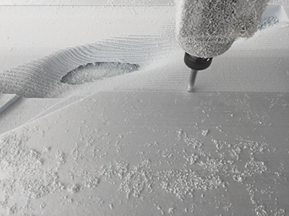
- 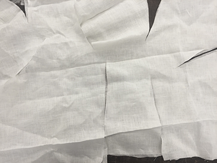


- 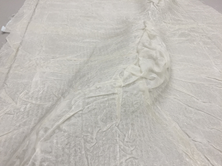
- 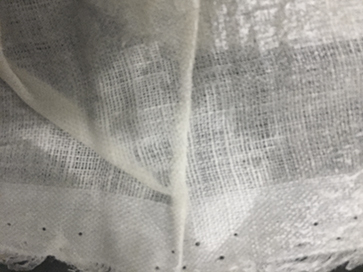
Final Project
Proposal:
Leveraging several aspects of the course curriculum, I aim to create a responsive light structure driven by acousto-optic effects.
This work is a reaction to the visceral works of a New York City ensemble Hess Is More. Earning critical acclaim as “[the 2014] album-of-the-year candidate” by The Lowbrow Reader, the octet creates experimental dance music rooted in jazz, krautrock, and afrobeat.
While the apparatus is designed to accompany a live performance by the band, it will be versatile enough to function as a stand-alone installation. Its primary components will be comprised of multifaceted pieces of glass (figure 1), a microphone, a light source, as well as reflective and transmissive gratings. Its output will be a series of prismatic images (figure 2) with the exact aesthetics to be determined in the later stages of the project. I expect the resulting image to be evocative of the band’s emblem – a constellation-like pattern encased in a circle (figure 3). Simultaneously translating the environment and reacting to it, light will thus pair with sound.

figure 1
-
figure 2
-
figure 3